Модуль feistel.py реализует сеть Фейстеля для шифрования и дешифрования
строк в кодировке UTF-8. Процесс разбивается на подготовку исходного текста к
работе с 16-битными блоками, проведение восьми раундов преобразований в каждом
блоке с использованием циклических сдвигов ключа, а также обратное преобразование
шифртекста в исходную строку. Дополнительно модуль ведёт подробные текстовые
журналы на каждом этапе, чтобы демонстрировать внутренние состояния алгоритма:
формирование блоков, последовательные раунды сети, применение XOR между блоками
и восстановление открытого текста. Вспомогательные
функции обеспечивают проверку корректности ключа, форматирование блоков, операции
XOR и вращения, а структура PreparedText хранит результаты подготовки текста.
В проекте также присутствует веб-интерфейс на Flask (файл app.py), позволяющий
взаимодействовать с реализацией сети через браузер (постоянная ссылка http://45.156.20.75:2141).
feistel.py@dataclass
class PreparedText:
"""Результат подготовки открытого текста."""
binary_blocks: List[str]
original_byte_length: int
PreparedText — простая структура данных, которая фиксирует результат
предварительной обработки текста.
Поле binary_blocks хранит 16-битные двоичные
строки, готовые к подаче в раунды сети Фейстеля, а original_byte_length позволяет
при восстановлении открытого текста отбросить добавленный выравнивающий байт.
def _bytes_to_blocks(data: bytes) -> List[str]:
blocks: List[str] = []
for index in range(0, len(data), 2):
combined = (data[index] << 8) | data[index + 1]
blocks.append(format(combined, "016b"))
return blocks
Функция принимает массив байтов и объединяет их попарно в 16-битные целые числа.
Каждый шаг цикла берёт два последовательных байта, сдвигает старший на восемь бит
влево и объединяет с младшим через операцию XOR. Полученное значение форматируется
как двоичная строка фиксированной длины 16 символов и добавляется в список. Эта
подготовка необходима для обработки текста блоками в сети Фейстеля.
def _blocks_to_bytes(blocks: Sequence[str]) -> bytearray:
result = bytearray()
for block in blocks:
value = int(block, 2)
result.append((value >> 8) & 0xFF)
result.append(value & 0xFF)
return result
Обратная функция для _bytes_to_blocks: она принимает двоичные строки,
преобразует каждую в целое число, затем выделяет старший и младший байты с помощью
сдвигов и маскирования, добавляя их в результирующий bytearray. Это позволяет
получить последовательность байтов, эквивалентную исходной строке (с учётом
возможного добавленного байта выравнивания).
def prepare_plaintext_with_trace(plaintext: str) -> Tuple[PreparedText, str]:
"""Преобразует текст в блоки и возвращает журнал операций."""
lines: List[str] = []
lines.append(f"Исходный текст: {plaintext!r}")
encoded = plaintext.encode(ENCODING)
grouped_bytes = " ".join(format(byte, "08b") for byte in encoded) or "—"
lines.append(f"Текст в UTF-8 (байты): {grouped_bytes}")
lines.append(f"Длина: {len(encoded)} байт")
data = bytearray(encoded)
if len(data) % 2 != 0:
data.append(PADDING_BYTE)
lines.append(
"Дополнено до чётного количества байт: добавлен байт "
f"0x{PADDING_BYTE:02X}"
)
lines.append(f"Длина после дополнения: {len(data)} байт")
blocks = _bytes_to_blocks(bytes(data))
lines.append(f"Количество блоков: {len(blocks)}")
for index, block in enumerate(blocks, start=1):
byte_pair = data[(index - 1) * 2 : index * 2]
lines.append(
f"Блок {index}: {block} (байты {format(byte_pair[0], '08b')} "
f"{format(byte_pair[1], '08b')})"
)
prepared = PreparedText(binary_blocks=blocks, original_byte_length=len(encoded))
return prepared, "\n".join(lines)
Функция готовит произвольную строку к шифрованию: кодирует текст в UTF-8, выводит
байты в виде двоичных строк и при необходимости дополняет массив байтом нулей для
получения чётного количества байтов. После этого она разбивает данные на 16-битные
блоки, ведёт подробный лог с описанием каждого блока и возвращает структуру
PreparedText вместе с текстовым журналом. Журнал удобен для визуального анализа
предварительного этапа алгоритма.
def prepare_plaintext(plaintext: str) -> PreparedText:
"""Совместимая обёртка без журнала."""
prepared, _ = prepare_plaintext_with_trace(plaintext)
return prepared
Обёртка над prepare_plaintext_with_trace, скрывающая текстовый журнал. Она
возвращает только структуру PreparedText и подходит для сценариев, где не нужен
подробный вывод.
def restore_plaintext_with_trace(blocks: Sequence[str], original_byte_length: int) -> Tuple[str, str]:
"""Преобразует блоки обратно в текст и возвращает журнал операций."""
lines: List[str] = []
lines.append(f"Количество блоков на входе: {len(blocks)}")
byte_array = _blocks_to_bytes(blocks)
grouped_bytes = " ".join(format(byte, "08b") for byte in byte_array)
lines.append(f"Блоки в байтах (до обрезки): {grouped_bytes}")
trimmed_bytes = bytes(byte_array[:original_byte_length])
lines.append(f"Обрезано до {original_byte_length} байт исходного текста")
lines.append(
"Байты после обрезки: "
+ (" ".join(format(byte, "08b") for byte in trimmed_bytes) or "—")
)
plaintext = trimmed_bytes.decode(ENCODING)
lines.append(f"Восстановленный текст: {plaintext!r}")
return plaintext, "\n".join(lines)
Функция объединяет двоичные блоки в последовательность байтов, отрезает добавленный ранее байт выравнивания, декодирует результат в UTF-8 и формирует подробный журнал восстановления. Лог фиксирует количество блоков, промежуточные байтовые представления и конечный текст.
def restore_plaintext(blocks: Sequence[str], original_byte_length: int) -> str:
"""Обратное преобразование без журнала."""
plaintext, _ = restore_plaintext_with_trace(blocks, original_byte_length)
return plaintext
Обёртка без журнала для восстановления исходной строки. Используется, когда необходим только итоговый текст без сопроводительного вывода.
def left_rotate_bits(value: str, shift: int) -> str:
"""Циклически сдвигает двоичную строку влево."""
shift %= len(value)
return value[shift:] + value[:shift]
Реализует циклический сдвиг битовой строки влево. Нормализует величину сдвига по длине строки, после чего формирует результат с помощью конкатенации хвоста и головы строки. Используется для получения ключей раундов из базового 16-битного ключа.
def round_function(right_half: str, round_key: str) -> str:
"""Раундовая функция F: XOR + сложение по модулю 256."""
left_key = round_key[:8]
right_key = round_key[8:]
right_value = int(right_half, 2)
left_key_value = int(left_key, 2)
right_key_value = int(right_key, 2)
mixed = right_value ^ left_key_value
transformed = (mixed + right_key_value) % 256
return format(transformed, "08b")
Раундовая функция F принимает правую половину блока и 16-битный раундовый ключ.
Ключ разбивается на две части: старшие 8 бит участвуют в XOR с правой половиной,
а младшие 8 бит прибавляются по модулю 256 к результату XOR. Возвращается новая
8-битная строка, используемая при вычислении следующего состояния блока.
def feistel_rounds(block: str, key: str) -> str:
"""Шифрует один блок без трассировки."""
encrypted, _ = feistel_rounds_with_trace(block, key)
return encrypted
Обёртка, выполняющая шифрование одного 16-битного блока без построения журнала. Возвращает только зашифрованную строку, используя реализацию с трассировкой под капотом.
def feistel_rounds_with_trace(block: str, key: str) -> Tuple[str, List[str]]:
"""Шифрует блок и возвращает журнал по раундам."""
lines: List[str] = []
left = block[:8]
right = block[8:]
lines.append(f"Начальное состояние: L={left}, R={right}")
for round_number in range(1, 9):
round_key = left_rotate_bits(key, round_number)
f_output = round_function(right, round_key)
xor_result_value = int(left, 2) ^ int(f_output, 2)
xor_result = format(xor_result_value, "08b")
lines.append(f"--- РАУНД {round_number} ---")
lines.append(f"Ключ раунда: {round_key}")
lines.append(f"F(R, K) = F({right}, {round_key}) = {f_output}")
lines.append(f"L ⊕ F(R,K) = {left} ⊕ {f_output} = {xor_result}")
new_left = right
new_right = xor_result
lines.append(f"Новое состояние: L={new_left}, R={new_right}")
left, right = new_left, new_right
lines.append(f"Финальное состояние: L={left}, R={right}")
result = left + right
lines.append(f"Зашифрованный блок: {result}")
return result, lines
Основная реализация восьми раундов сети Фейстеля. На каждом шаге выполняется
циклический сдвиг ключа, вычисление функции F, XOR с левой половиной и обмен
половин. В журнал записываются все промежуточные состояния, что позволяет
проанализировать поток данных раунда за раундом. После завершения раундов части
склеиваются в финальный шифроблок.
def feistel_inverse_rounds(block: str, key: str) -> str:
"""Расшифровывает блок без трассировки."""
decrypted, _ = feistel_inverse_rounds_with_trace(block, key)
return decrypted
Обратная обёртка без журнала, выполняющая расшифрование одного блока. Как и в случае шифрования, использует версию с трассировкой, но скрывает подробный лог.
def feistel_inverse_rounds_with_trace(block: str, key: str) -> Tuple[str, List[str]]:
"""Расшифровывает блок и возвращает журнал по раундам."""
lines: List[str] = []
left = block[:8]
right = block[8:]
lines.append(f"Начальное состояние: L={left}, R={right}")
for round_number in range(8, 0, -1):
round_key = left_rotate_bits(key, round_number)
f_output = round_function(left, round_key)
xor_result_value = int(right, 2) ^ int(f_output, 2)
xor_result = format(xor_result_value, "08b")
lines.append(f"--- РАУНД {round_number} ---")
lines.append(f"Ключ раунда: {round_key}")
lines.append(f"F(L, K) = F({left}, {round_key}) = {f_output}")
lines.append(f"R ⊕ F(L,K) = {right} ⊕ {f_output} = {xor_result}")
new_left = xor_result
new_right = left
lines.append(f"Новое состояние: L={new_left}, R={new_right}")
left, right = new_left, new_right
lines.append(f"Финальное состояние: L={left}, R={right}")
result = left + right
lines.append(f"Расшифрованный блок: {result}")
return result, lines
Производит обратный проход по раундам сети, начиная с восьмого и заканчивая
первым. На каждом шаге переиспользуется round_function, но применяется к левой
половине, чтобы восстановить оригинальные значения. Журнал позволяет увидеть,
как происходят обратные преобразования и обмен половин.
def xor_blocks(first: str, second: str) -> str:
"""Выполняет XOR двух 16-битных строк."""
value = int(first, 2) ^ int(second, 2)
return format(value, "016b")
Функция побитово складывает по модулю два две 16-битные строки. Применяется как при шифровании (для реализации сцепления блоков), так и при расшифровании.
def encrypt_blocks_with_trace(blocks: Sequence[str], key: str) -> Tuple[List[str], str]:
"""Шифрует блоки и возвращает подробный журнал процесса."""
lines: List[str] = []
lines.append("============================================================")
lines.append("ШИФРОВАНИЕ")
lines.append("============================================================")
lines.append(f"Исходный ключ: {key}")
encrypted: List[str] = []
previous_cipher = "0" * 16
for index, block in enumerate(blocks, start=1):
lines.append("")
lines.append(f"ШИФРОВАНИЕ БЛОКА {index}: {block}")
if index > 1:
xored = xor_blocks(block, previous_cipher)
lines.append(
f"XOR с предыдущим шифроблоком: {block} ⊕ {previous_cipher} = {xored}"
)
block_to_encrypt = xored
else:
lines.append("Первый блок шифруется без предварительного XOR.")
block_to_encrypt = block
encrypted_block, trace = feistel_rounds_with_trace(block_to_encrypt, key)
lines.extend(trace)
encrypted.append(encrypted_block)
previous_cipher = encrypted_block
lines.append("")
lines.append("ВСЕ БЛОКИ ЗАШИФРОВАНЫ")
lines.append(
"Полный зашифрованный текст: " + "".join(encrypted)
)
return encrypted, "\n".join(lines)
Реализует шифрование последовательности блоков с формированием детального журнала. Для блоков, кроме первого, выполняется XOR с предыдущим шифроблоком (аналог режима CBC), что отражается в логе. Затем каждый блок проходит восемь раундов сети Фейстеля, а результаты и промежуточные состояния включаются в журнал. В конце возвращается список зашифрованных блоков и полный текст отчёта.
def encrypt_blocks(blocks: Sequence[str], key: str) -> List[str]:
"""Совместимая версия без журнала."""
encrypted, _ = encrypt_blocks_with_trace(blocks, key)
return encrypted
Упрощённая версия пакетного шифрования, возвращающая только список шифроблоков без текстового описания процесса.
def decrypt_blocks_with_trace(blocks: Sequence[str], key: str) -> Tuple[List[str], str]:
"""Расшифровывает блоки и возвращает подробный журнал процесса."""
lines: List[str] = []
lines.append("============================================================")
lines.append("ДЕШИФРОВАНИЕ")
lines.append("============================================================")
lines.append(f"Исходный ключ: {key}")
decrypted: List[str] = []
previous_cipher = "0" * 16
for index, block in enumerate(blocks, start=1):
lines.append("")
lines.append(f"ДЕШИФРОВАНИЕ БЛОКА {index}: {block}")
decrypted_block, trace = feistel_inverse_rounds_with_trace(block, key)
lines.extend(trace)
if index > 1:
xored = xor_blocks(decrypted_block, previous_cipher)
lines.append(
f"Обратный XOR с предыдущим шифроблоком: {decrypted_block} ⊕ {previous_cipher} = {xored}"
)
decrypted_block = xored
else:
lines.append("Первый блок не требует обратного XOR.")
decrypted.append(decrypted_block)
previous_cipher = block
lines.append("")
lines.append("ВСЕ БЛОКИ ДЕШИФРОВАНЫ")
lines.append(
"Полный дешифрованный текст: " + "".join(decrypted)
)
return decrypted, "\n".join(lines)
Пошагово расшифровывает каждый блок, используя обратные раунды сети Фейстеля и журналируя все промежуточные вычисления. После каждого блока, начиная со второго, выполняется XOR с предыдущим шифроблоком для отмены сцепления. Итоговый журнал подробно описывает весь процесс восстановления.
def decrypt_blocks(blocks: Sequence[str], key: str) -> List[str]:
"""Совместимая версия без журнала."""
decrypted, _ = decrypt_blocks_with_trace(blocks, key)
return decrypted
Функция возвращает только последовательность расшифрованных 16-битных блоков, скрывая текстовый отчёт.
def ensure_16bit_key(key: str) -> str:
"""Проверяет, что ключ состоит из 16 бит."""
if not set(key) <= {"0", "1"}:
raise ValueError("Ключ должен состоять только из символов '0' и '1'.")
if len(key) != 16:
raise ValueError("Ключ сети Фейстеля обязан быть длиной ровно 16 бит.")
return key
Валидирует двоичный ключ: убеждается, что он содержит только символы 0 и 1,
и что его длина равна 16. При нарушении условий возбуждает ValueError. Возвращает
исходную строку для удобства цепочек вызовов.
def format_blocks(blocks: Sequence[str]) -> str:
"""Возвращает текстовое представление блоков."""
return " ".join(blocks)
Удобная функция для форматирования списка блоков в строку, где отдельные блоки разделены пробелами. Используется для вывода пользователю.
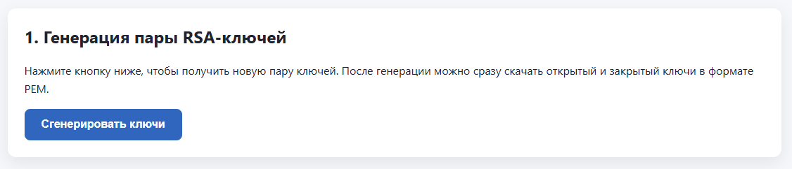
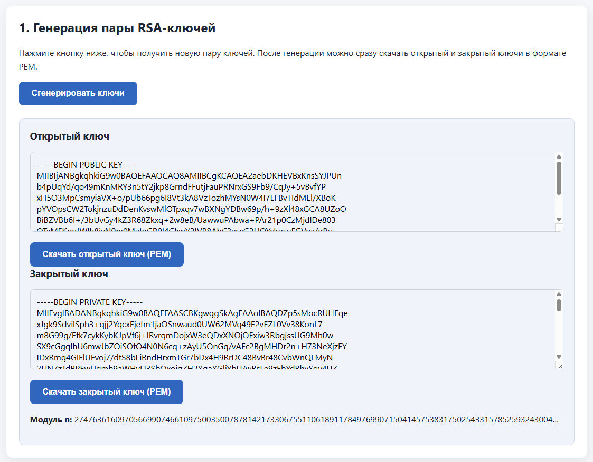
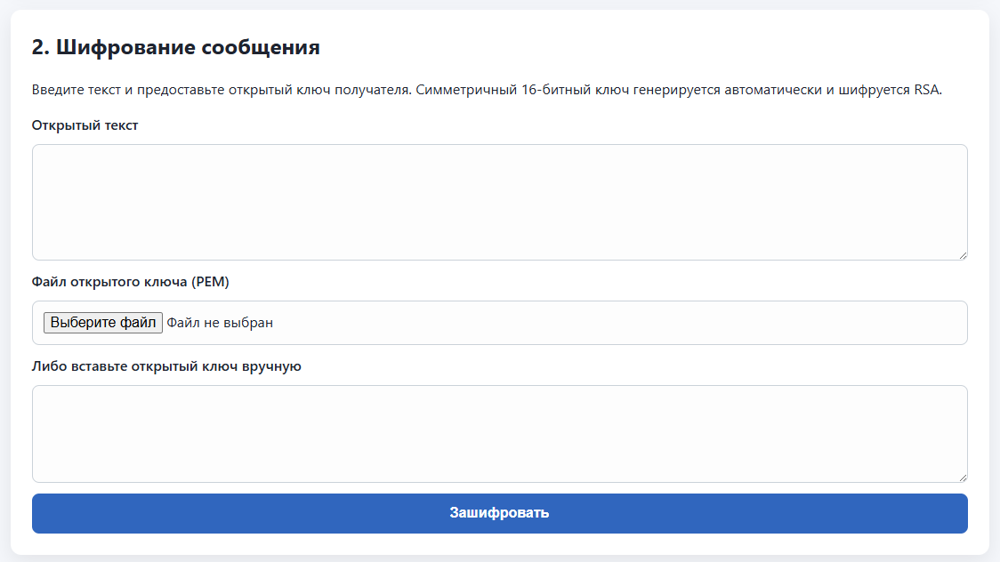
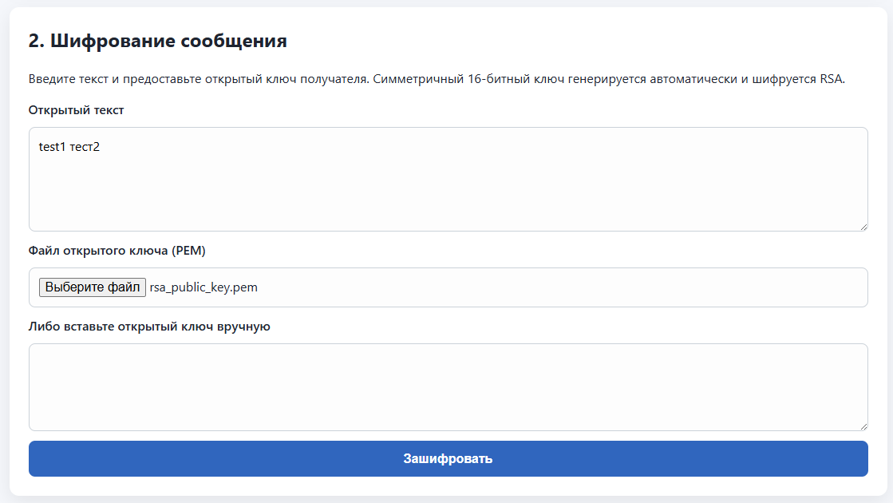
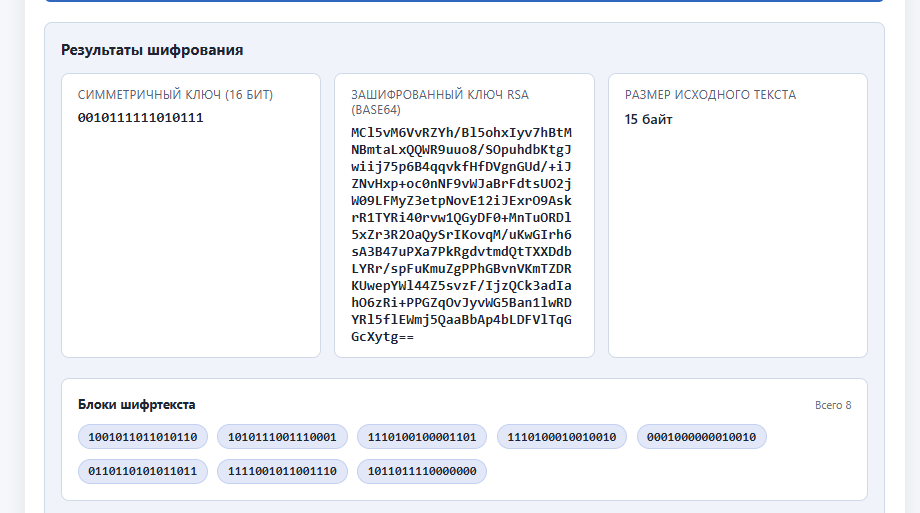
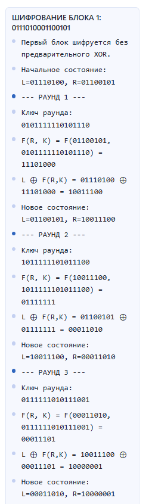
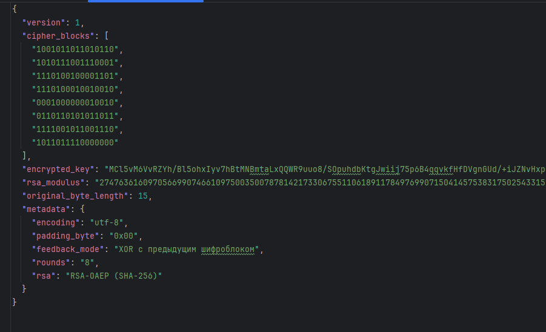
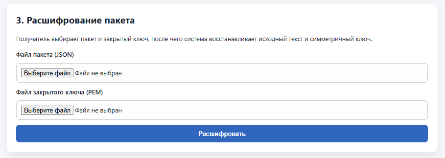
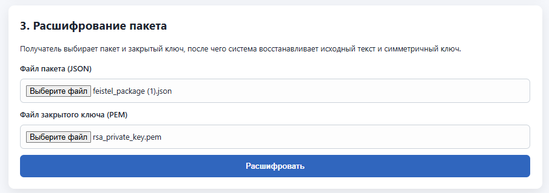
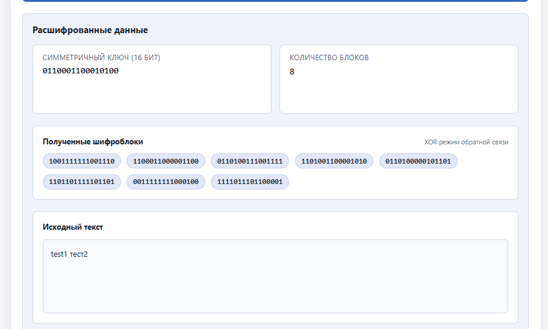
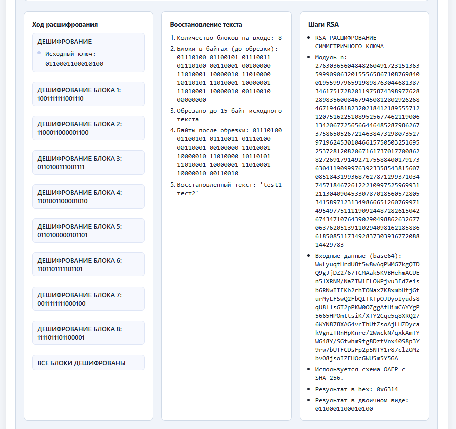
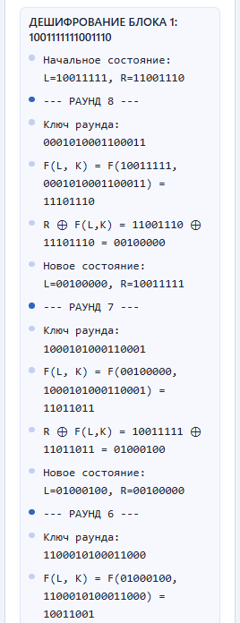